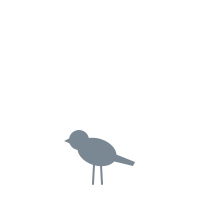

기준: specs/screens.md S-03 · specs/05-inheritance.md v0 2장(성별을 고른다, 출발 스탯 = 종 평균) · 4장(잠재력 등급 범위). 숫자는 05 2장의 박새 예시. 잠정(#138) — 05가 머지 전. 성별 설명 문구는 콘텐츠.
확률·예상치 자리 터치 영역 44px 이상 550 — 결정 영역 끝

| 비행 | E / D~C |
| 채식 | C / B~A |
| 경계 | C / B~A |
| 체력 | F / F~E |
| 과시 | D / C~B |
| 사회 | C / B~A |
↓ 접힘 아래: 스탯 이름을 누르면 한 줄 설명(S-12와 같은 글).
patrol·feedMate). 위 문장은 자리 글, 문구는 콘텐츠.